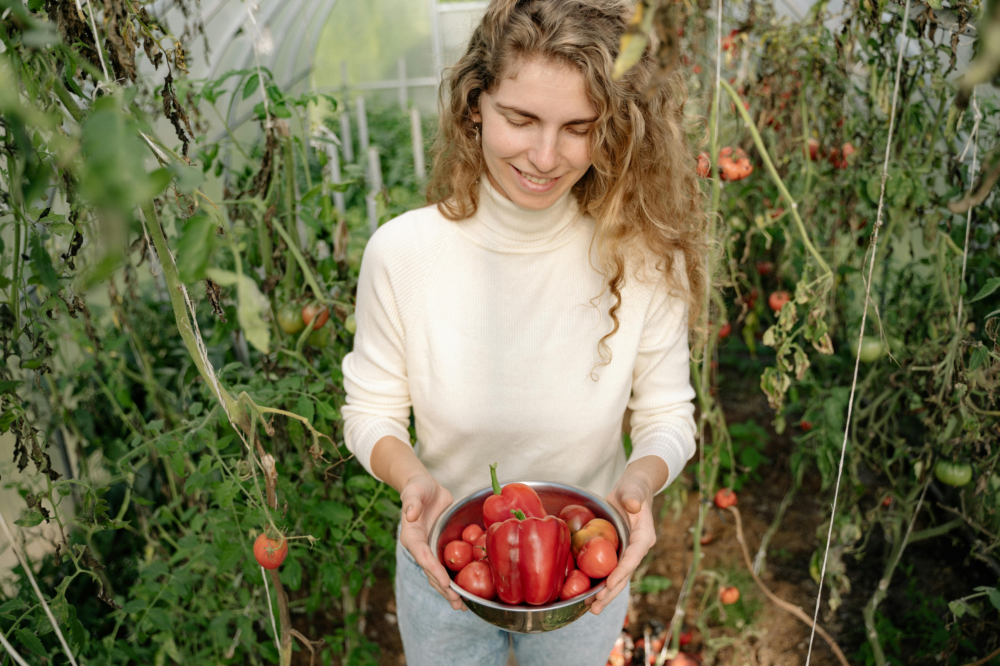

Sobre o Pé de Tudo
O PÉ DE TUDO é uma plataforma inovadora que conecta produtores de hortas urbanas, consumidores conscientes e entusiastas de sustentabilidade. Criamos um ambiente digital que possibilita o aproveitamento inteligente do excedente de produção em hortas urbanas, promovendo o acesso a alimentos frescos, reduzindo a pegada de carbono e fortalecendo a economia local. Nossa proposta é transformar espaços urbanos ociosos em verdadeiros centros de produção sustentável, valorizando a agricultura urbana e incentivando a colaboração entre comunidades.
Nossa Missão
A missão do PÉ DE TUDO é promover a sustentabilidade e o consumo consciente, fornecendo uma solução tecnológica que facilite a comercialização, troca e doação de alimentos cultivados em hortas urbanas. Buscamos viabilizar economicamente, socialmente e ambientalmente a produção urbana, conectando pequenos e médios produtores a consumidores que valorizam o frescor, a qualidade e o impacto positivo no meio ambiente.
O Que Fazemos
Marketplace de Produtos Frescos
Um espaço digital para a venda, troca e doação de alimentos frescos cultivados localmente.
Promoção de Economia Circular
Incentivamos o reaproveitamento de alimentos e a redução de desperdícios através de uma rede colaborativa.
Facilitação de Comércio Local
Simplificamos o processo de compra e venda de alimentos frescos diretamente do produtor para o consumidor.
Como fazer Parte?
